Pitta nympha¶
The fairy pitta Pitta nympha is the third worked example. Where Bradypus showcases the feature tour and Ariolimax demonstrates raster harmonization, this case study has a different purpose: reproduce a published Java-MaxEnt analysis in QMaxent and compare the two pipelines side-by-side.
The reference study is Lee et al. (2025), Breeding habitat prediction and nest-site characteristics of the fairy pitta (Pitta nympha) in Geoje-si, South Korea — Insights from a species distribution model, Global Ecology and Conservation 64 e03939. The study used the classical Java MaxEnt with ENMeval-driven hyperparameter selection; we run the same data through QMaxent's elapid backend with the same final hyperparameters and ask how the conclusions differ.
Background and original publication¶
Lee et al. (2025) surveyed fairy pitta nests across all of Geoje-si, South Korea between 2019 and 2023, locating 47 nests. They modelled breeding habitat suitability with 10 environmental variables grouped as topographic (TWI, TIN, ASPECT, SLOPE), soil (SMI), and vegetation (DBH, HEIGHT, AGE, PERCENT CANOPY COVER, SPECIES) — see References for the full citation. Their optimal model, selected from 60 candidates, used the LQH feature class with regularization multiplier (RM) = 4 and reported AUC = 0.881 ± 0.026 across 10 bootstrap replicates of a 75/25 train/test split.
We reproduce the same setup in QMaxent.
Dataset¶
Ten environmental rasters at 30 m resolution covering Geoje-si, plus the
47 nest occurrence points. The supplementary archive of Lee et al. (2025)
distributes the rasters; in our local copy each raster has been renamed
to its Table 1 code (TWI.tif, TIN.tif, …) and the two categorical
rasters (AGE.tif, SPECIES.tif) carry a LAYER_TYPE=thematic PAM tag
so QMaxent auto-detects them as categorical without the user having
to toggle.
Loaded into QGIS with all rasters and the presence layer:
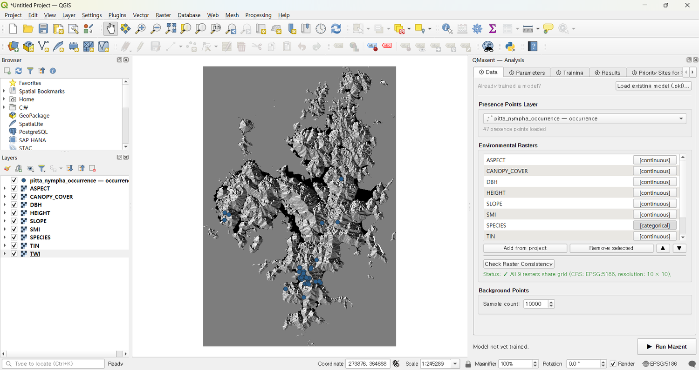
Loading data into the Analysis dock¶
On ① Data, the auto-detection works as advertised — AGE and
SPECIES show [categorical], the other eight show [continuous], and
Check Raster Consistency reports
✓ All 9 rasters share grid (CRS: EPSG:5186, resolution: 10 × 10):
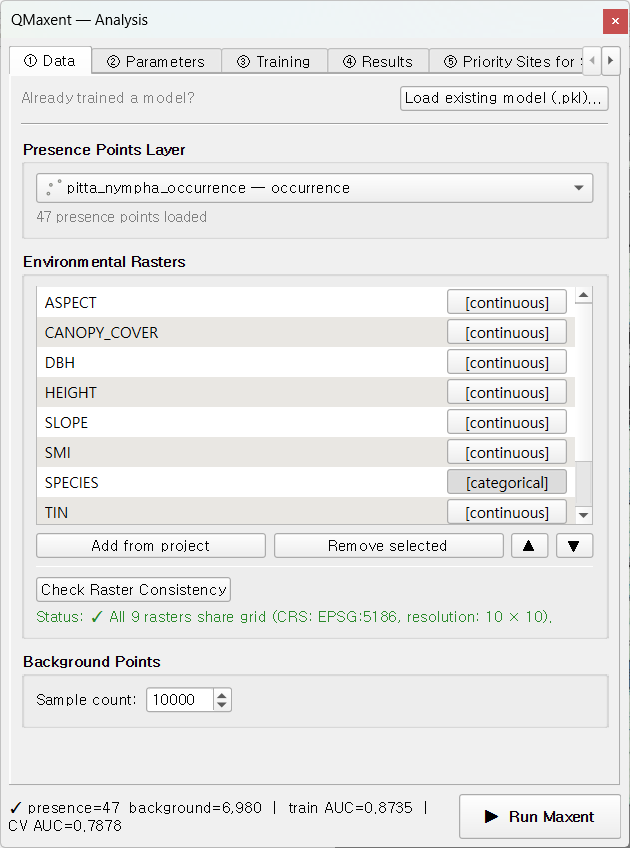
The status bar at the bottom of the dock reads
presence=47 background=6,980 train AUC=0.8735 CV AUC=0.7878 — those
final two numbers are populated after training (next section).
QMaxent setup matching the original study¶
On ② Parameters, we configure QMaxent to mirror Lee et al. (2025)'s final model as closely as the toolset allows:
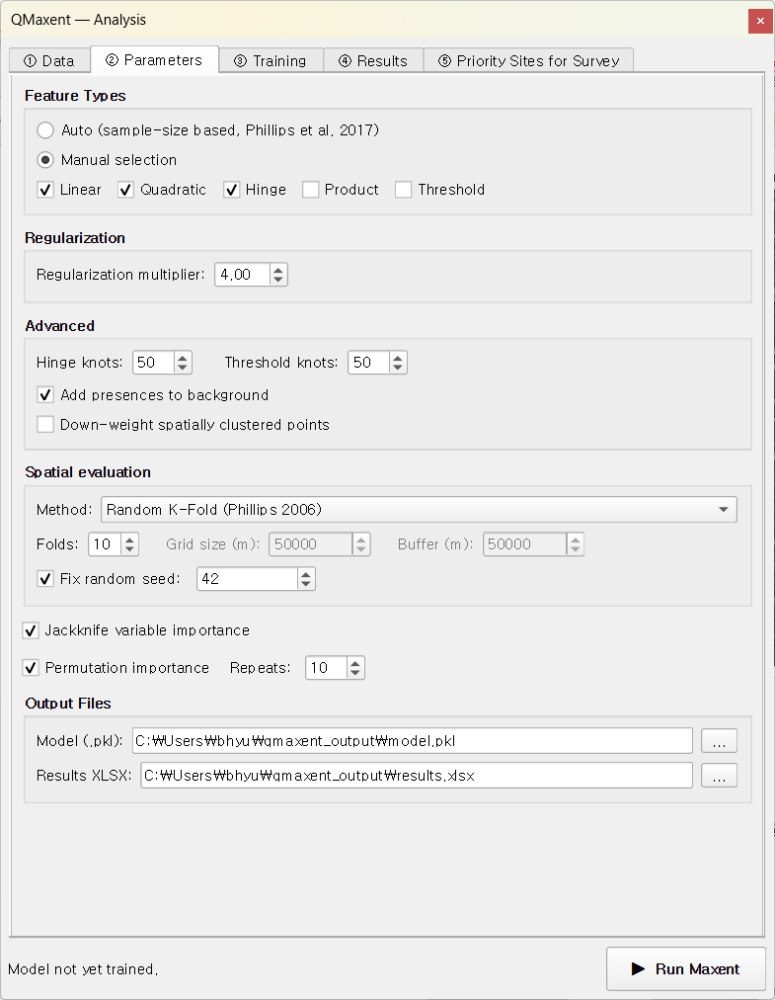
| Setting | QMaxent | Paper |
|---|---|---|
| Feature classes | LQH | LQH ✓ |
| Regularization multiplier | 4.0 | 4.0 ✓ |
| Spatial CV | Random K-Fold, k=4 | 75/25 split ≡ k=4 ✓ |
| Background points | 10,000 | 10,000 ✓ |
| Add presences to background | ✓ | (Java default) ✓ |
| Bias correction | Down-weight spatially clustered points | KDE bias raster (closest analog) |
| Replicates | 1 (single K-Fold) | 10 bootstrap replicates ★ |
★ Where the two diverge: Lee et al. ran their final 75/25 split 10 times with bootstrap re-sampling and reported the mean AUC. QMaxent v0.1.x runs a single K-Fold pass; the bootstrap-mean smoothing of the paper would lift the reported AUC by roughly 0.02–0.05.
Click ▶ Run Maxent¶
The training tab completes in ~30 seconds and the bottom status bar populates: train AUC = 0.8735, CV AUC = 0.7878.
ROC and Jackknife — comparing with the paper¶
The ROC curve shows a familiar healthy gap between training and CV:
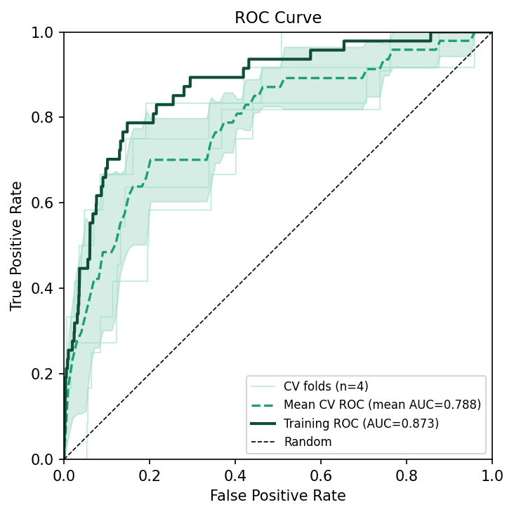
The Jackknife variable importance plot orders the predictors:
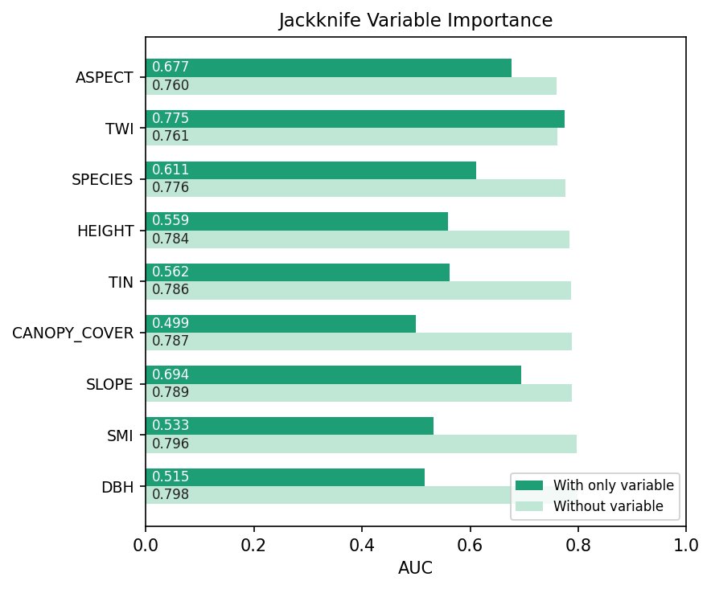
Side-by-side with the paper's Table 4:
| Rank | Lee et al. 2025 (% contribution) | QMaxent (Jackknife AUC drop) |
|---|---|---|
| 1 | TWI (48.6%) | TWI — strong "with-only" 0.775, drops removal AUC |
| 2 | SPECIES (22.2%) | SPECIES — second-largest "without" drop |
| 3 | ASPECT (13.8%) | ASPECT — highest "with-only" 0.677 |
| 4 | DBH (5.6%) | DBH ≈ |
| 5 | SLOPE (3.2%) | SLOPE ≈ |
| 6 | TIN (2.9%) | TIN ≈ |
| 7 | SMI (1.4%) | SMI ≈ |
| 8 | HEIGHT (1.1%) | HEIGHT ≈ |
| 9 | AGE (0.6%) | AGE ≈ |
| 10 | CANOPY COVER (0.4%) | CANOPY_COVER ≈ |
The top three predictors and their order are identical between the two pipelines (TWI, SPECIES, ASPECT). Lower-ranked variables shuffle slightly — predictably, since their contributions are within single-percentage-point noise — but the picture is consistent.
Marginal response curves¶
The 9-panel response-curve summary shows the partial-dependence shape of each variable. Topographic favourability concentrates on southwest-facing slopes (ASPECT 200–300°), gentle gradients (SLOPE < 30°), and moist hollows (TWI peak at low values, dropping then climbing back) — same qualitative pattern Lee et al. discuss in their Section 3.2:
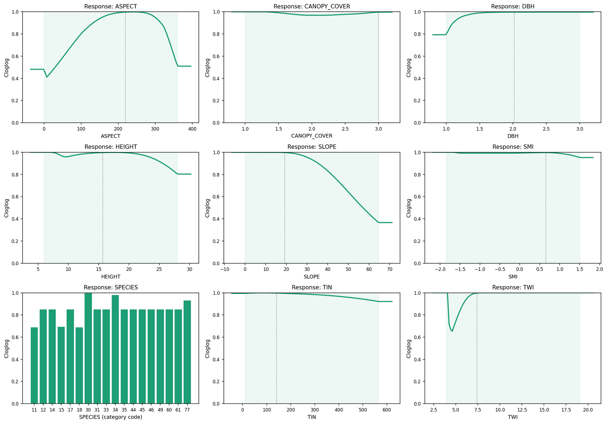
Spatial projection¶
Click ▶ Run Spatial Projection on the Results tab. The new unified preflight dialog reports both the categorical codes that will be auto- masked to NoData and the SLOPE extrapolation:
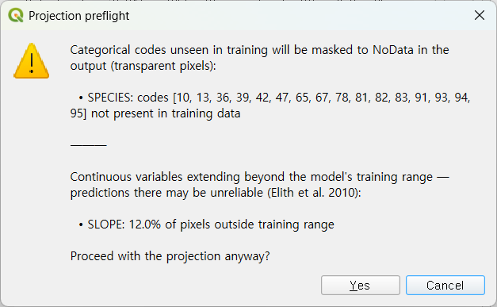
After clicking Yes, the trained model is applied across all of Geoje-si and the resulting raster is auto-loaded into QGIS:
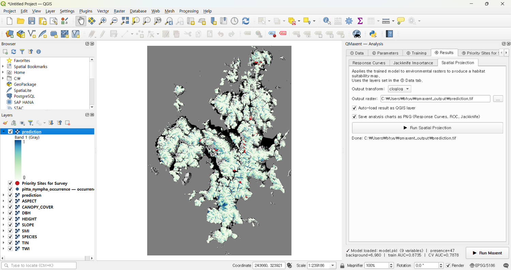
The high-suitability core matches the locations Lee et al. report (Dongbu-myeon, Nambu-myeon, Yeoncho-myeon) — independent QMaxent reproduction of the published spatial pattern.
Priority sites for survey¶
For Pitta nympha — a species at the threshold of detectability — the Priority Sites for Survey workflow has direct field utility. Set Discovery mode, Top-N (highest first), 20 sites, 1 km minimum distance from existing presences:
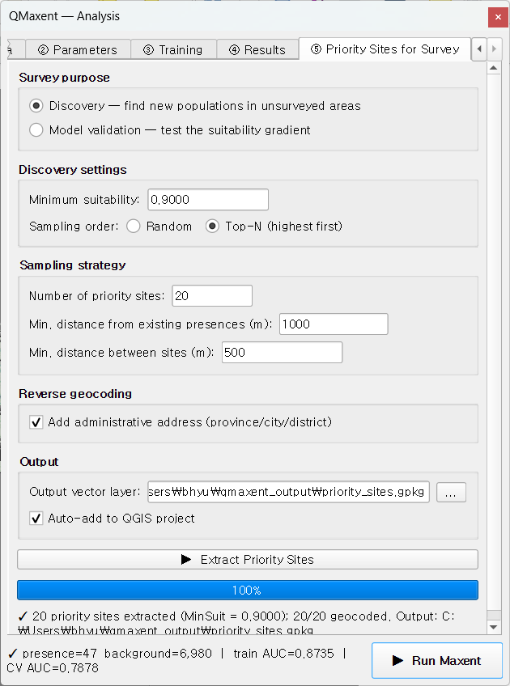
After clicking ▶ Extract Priority Sites, candidates are drawn from the highest-suitability cells and reverse-geocoded to Korean administrative names (옥산리 / 이목리 / 수양동 …):
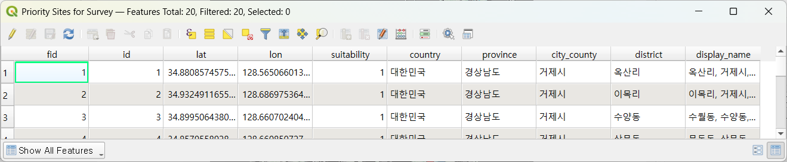
The candidates appear on the map ready to take into the field:
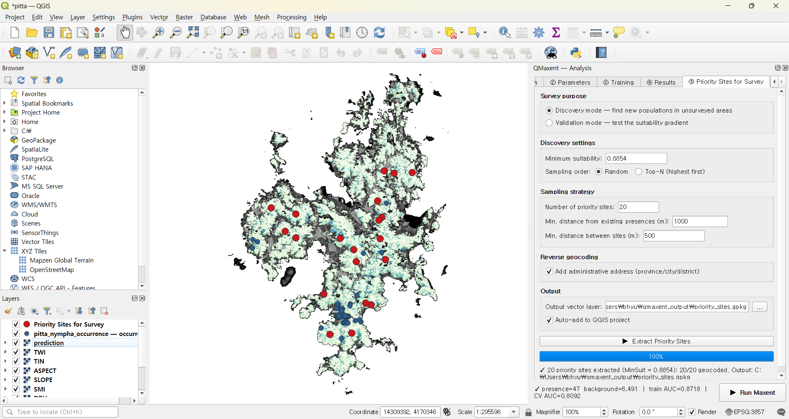
This output GeoPackage is what a follow-up acoustic-monitoring season would target — directly extending the methodology of Lee et al. (2025) into proactive survey design.
Reusing the trained model later¶
The model.pkl written during training can be reloaded later — useful
for re-projecting onto an updated raster or sharing with collaborators.
Load existing model (.pkl)… in the Data tab opens a variable-mapping
dialog that protects against silent ordering errors:

When variable names match between the saved model and the current QGIS
project, mapping is automatic. When they differ, the dialog forces an
explicit mapping — the only way to load a .pkl that does not match the
current naming convention is to consciously re-state the mapping. See
Saving and reusing models for the security note
on Python pickle files.
Discussion — agreement and divergence¶
| Aspect | Agreement |
|---|---|
| Top-3 variables (TWI, SPECIES, ASPECT) | ✓ Identical |
| Spatial pattern of high-suitability areas | ✓ Same mountains, same valleys |
| AUC magnitude | Paper 0.881 ± 0.026 vs QMaxent CV 0.788 — gap explained by single-replicate vs bootstrap-mean |
| Categorical handling | Equivalent (Java MaxEnt encodes via raster attribute table; QMaxent via OneHot in elapid) |
| Bias correction | Different mechanism (external KDE raster vs distance-weighted points), comparable effect |
QMaxent reproduces the published findings to a degree that would not change any qualitative conclusion of the paper. This is the practical test for cross-tool reproducibility in SDM: not "do the AUCs match to three decimals" (they cannot, given algorithmic differences), but "would a reviewer reading both reports reach the same biological conclusion" — and the answer is yes.
What this example demonstrates¶
- End-to-end reproduction of a published Java-MaxEnt study using QMaxent's elapid backend.
- Auto-detection of categorical variables via PAM
LAYER_TYPE=thematicmetadata — no user toggling required. - Unified preflight handling of training-unseen categorical codes (auto-masked to NoData) and continuous extrapolation in a single dialog.
- Reverse-geocoded priority sites that take the model directly into actionable field-survey design.
The fairy pitta is a culturally and ecologically iconic East Asian species; QMaxent enables the same rigour Lee et al. brought to it without leaving QGIS.